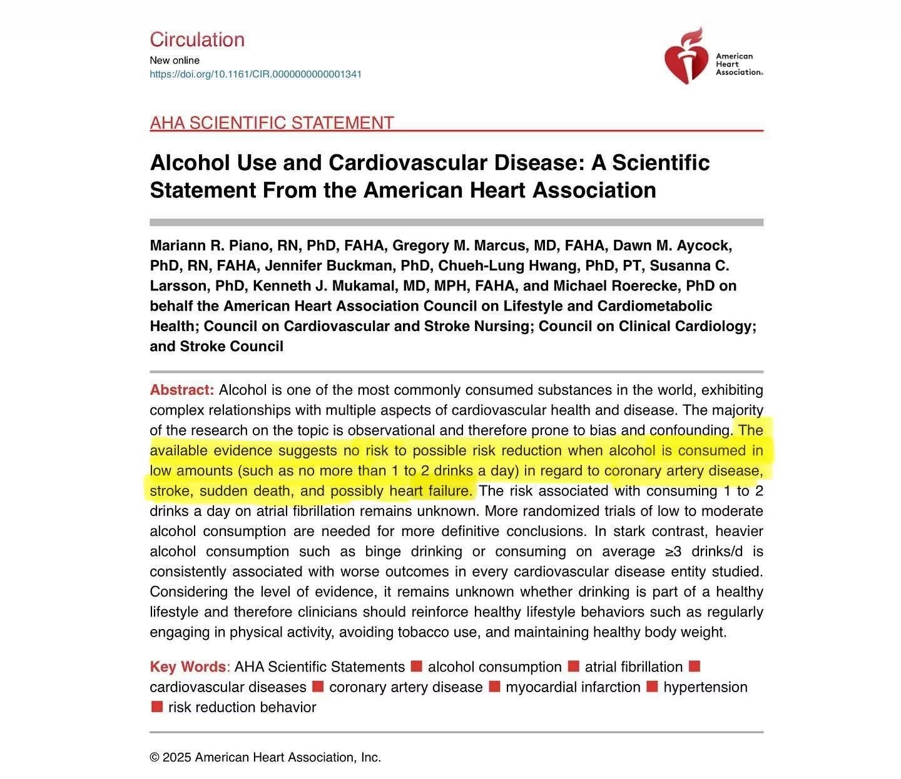

(no text — see the shared post below)


AHA statement: up to 1-2 drinks a day shows no risk to possible benefit for heart disease
Louis shares an American Heart Association statement quoting that up to 1-2 drinks a day carries no risk to possible benefit for coronary disease, stroke, sudden death and perhaps heart failure, while heavier drinking is harmful. He argues claims otherwise are not supported.